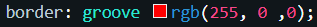

The CSS Box Model
How to structure a website from the ground up.
12 February 2021
What is the CSS Box Model
The css box model is what we use to make the layout of our website, it is how we separate and position content on the webpage. The main components are the content, padding, border and margin.
Units of measurement
There are more than one type of unit measurements that you can use to define you parameters here are an example of a few. px is a measurement based off of pixels from the old 1990s CRT monitors and are about 0.25mm and are a fixed measurement.
Em is a bit different as it is not a fixed measurement, it is relative to the font. If the font size is 4pt then 1 em will be 4pt. There are many more fonts but I will let you explore them, heres a link to a good rescource on unit of measurements
Content
The content is the images and text we have in our web page, the demesions of this can be specified with the "width" and "height" properties in css. "width" determines how wide the content is, "height" determines how tall the content is.
Padding
Padding is the empty white space that surrounds the content. Example The eye has less padding than the star.
To do this you need to use the "padding" element in css on to the content you want to add padding to.
Padding can be deffined with any of the aforementioned units of measurement. The order in which you specify the units effects how the padding is applied. The padding will be added in this order. The top, right, bottom and left of the content.
Border
wraps around the padding as exampled to the right (below on mobile) with the dotted lines. To use it in css you use the border element with the style (ie solid, groove, etc) followed by the color. Here I have used rgb.
Margin
This is the space that separates the content boxes. This would be the space between the eye and the Star's border. Like the padding the margin is deffined by using the same notation and will change it in the same order (from left to right). Top, right, bottom and left sides.